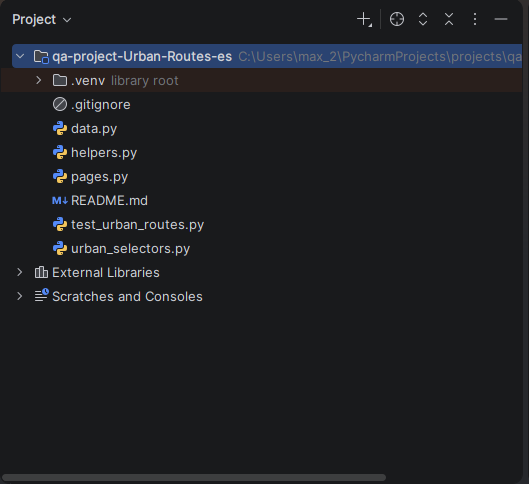
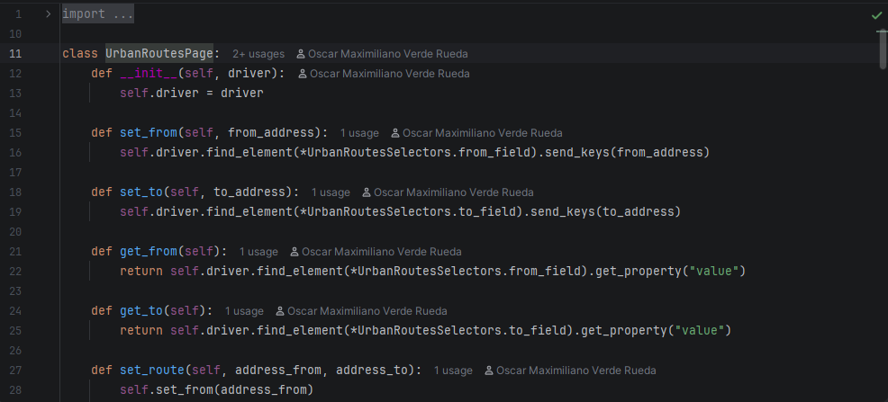
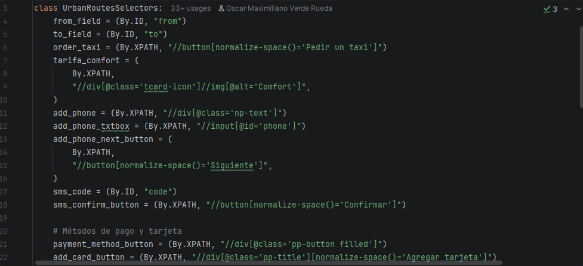
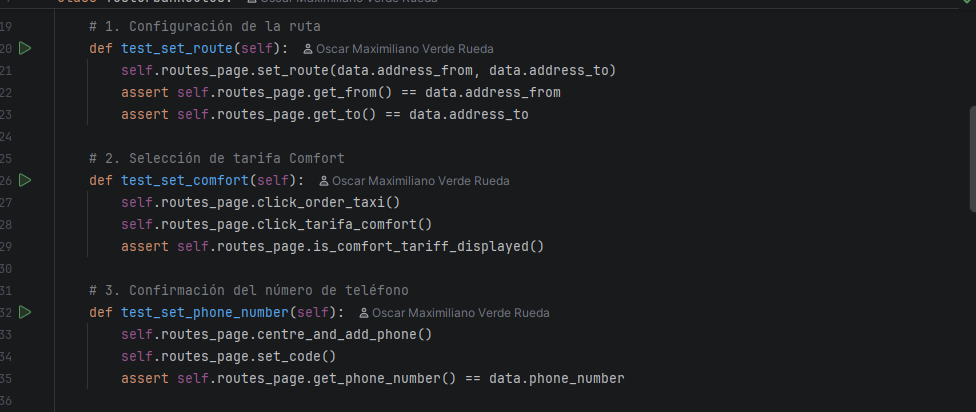
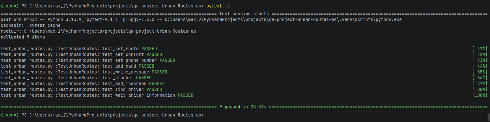
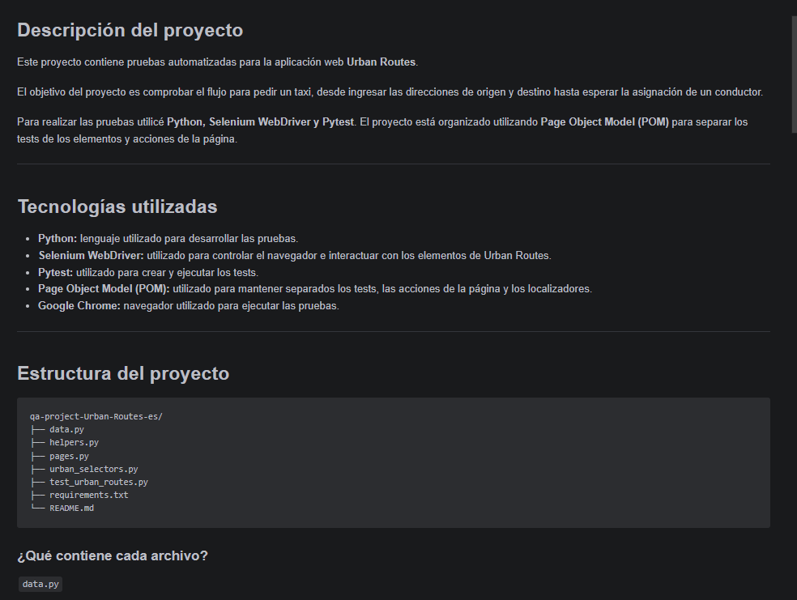

01 · CONTEXTO
Qué automatiza el proyecto
Urban Routes es una aplicación web para solicitar viajes. El objetivo de la suite fue automatizar el flujo principal de usuario: ingresar direcciones, seleccionar la tarifa Comfort, registrar un número telefónico, agregar una tarjeta, escribir un mensaje, solicitar servicios adicionales y esperar la información del conductor.
La automatización se ejecutó con Selenium WebDriver y Pytest, manteniendo la lógica de interacción con la interfaz separada de los propios casos de prueba.
02 · ARQUITECTURA
Cómo organicé la automatización
Page Object Model
La clase UrbanRoutesPage concentra acciones de alto nivel como
configurar la ruta, seleccionar opciones y consultar valores de la interfaz.
Selectores separados
Los localizadores están centralizados en UrbanRoutesSelectors,
utilizando estrategias como By.ID y By.XPATH.
Datos de prueba
Los datos utilizados por los casos se mantienen separados de la lógica principal para evitar valores repetidos dentro de los tests.
Tests legibles
Los casos utilizan métodos del Page Object y aserciones directas, permitiendo que cada test describa claramente el comportamiento que valida.
03 · COBERTURA AUTOMATIZADA
Flujos incluidos
La suite contiene nueve pruebas automatizadas que cubren diferentes pasos del flujo principal de solicitud de viaje.
Configuración de ruta
Validación de los campos de origen y destino mediante lectura posterior de sus valores.
Selección de tarifa Comfort
Interacción con la opción de tarifa y comprobación de que quede seleccionada.
Datos del viaje
Registro de teléfono, tarjeta, mensaje para el conductor y opciones adicionales.
Solicitud y asignación
Validación del flujo hasta encontrar y mostrar información del conductor.
04 · RESULTADO
Ejecución de la suite
La ejecución mostrada en el proyecto recoge 9 pruebas y finaliza con 9 passed. La salida de Pytest permite revisar de forma individual el resultado de cada escenario y el resumen general de la suite.
Este proyecto me permitió practicar no solo Selenium, sino también organización del código, reutilización de métodos, separación de responsabilidades y mantenimiento de una suite automatizada.
05 · EVIDENCIAS
Material del proyecto
Estas capturas muestran la estructura del proyecto, la implementación del patrón POM, los selectores, ejemplos de tests, la ejecución completa y la documentación técnica.





